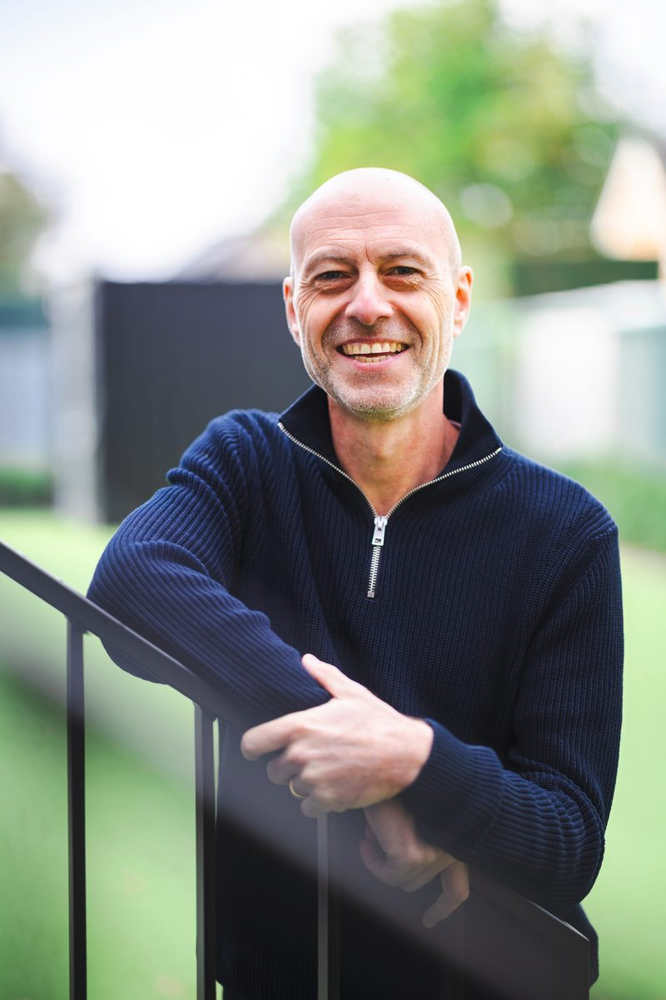
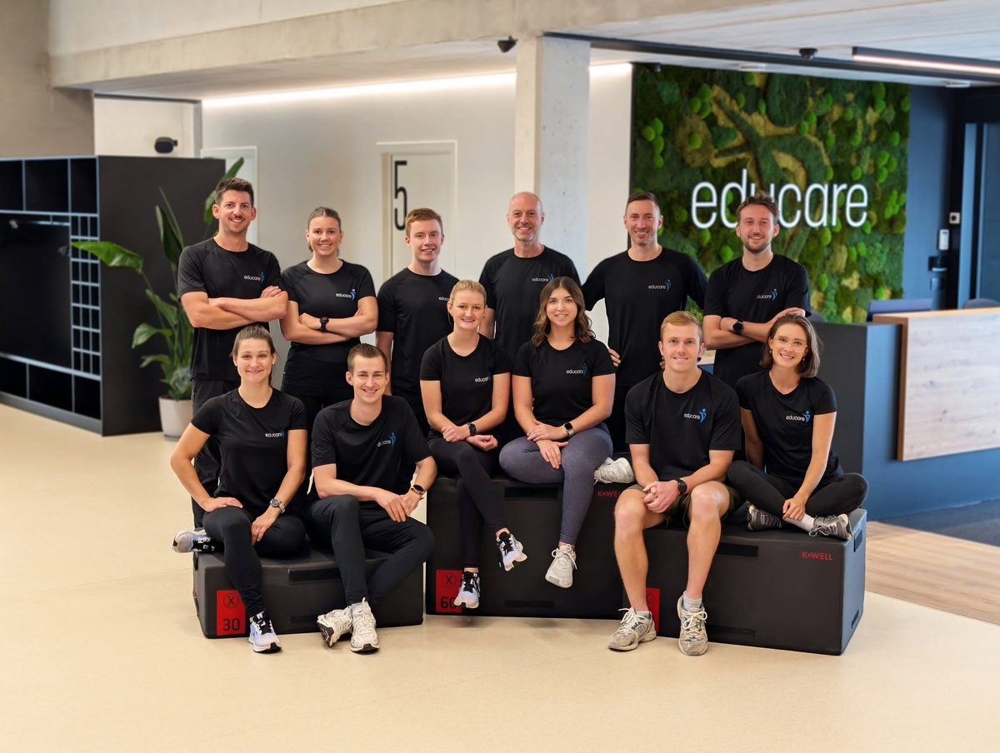
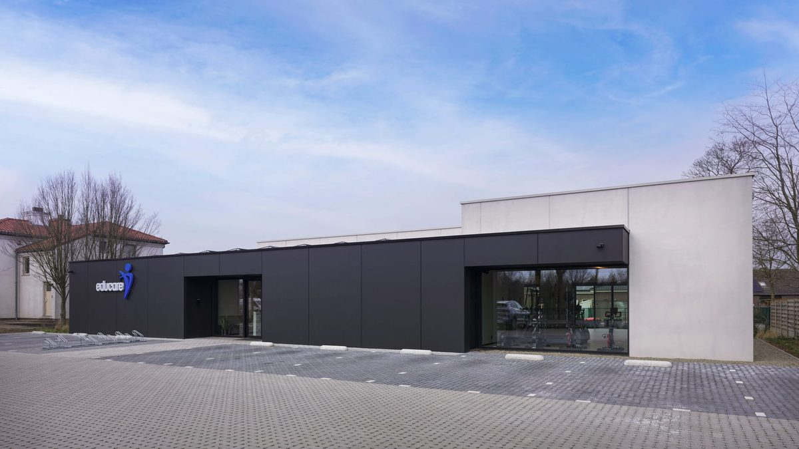

Van zorgverlener naar zorgondernemer
Ik ben Raf en ik help je jouw droompraktijk te realiseren.
"Als businesscoach begeleid ik zorgverleners in hun groei naar zorgondernemers met meer richting, rust en rendement."
Herken je dit?
Een overvolle agenda, constante stress en te weinig rendement
Als zorgprofessional gaat al je focus naar de zorg voor je patiënten. Maar de businesskant van je praktijk kost steeds meer energie.
-
Geen tijd voor strategie: Je werkt alleen maar in je praktijk, waardoor je geen ruimte hebt om te bouwen aan je praktijk.
-
Te weinig rendement: De omzet is er wel, maar door hoge kosten en een slechte structuur houd je er te weinig aan over.
-
Geen rust, wel stress: Je voelt je onmisbaar en je bent constant bezig met de praktijk, wat ten koste gaat van je energie en privéleven.
Dat kan anders. Met mijn eigen ervaring als ondernemer geef ik je de inzichten en tools mee om te groeien van zorgverlener naar zorgondernemer.
Mijn aanpak
Geen vage theorie, wel een helder en praktisch stappenplan. Ik help je groeien van een overvolle agenda naar een duurzame en winstgevende praktijk die echt bij jou past.
De basis hiervoor is het RAF-model: het fundament dat elke zorgondernemer nodig heeft.
Richting
Bepaal je unieke positie, doelgroep en aanbod. Zodat je met heldere focus kan werken.
Actie
Kom in beweging met een strategisch plan en groei als ondernemer met structuur en vertrouwen.
Financieel inzicht
Krijg grip op je cashflow, tarieven en winstgevendheid, voor zelfzekere beslissingen en een bloeiende praktijk.
Het stappenplan
Ontdek het RAF-model
Met het RAF-model krijg je een heldere structuur die jouw passie voor zorg verbindt met gezond ondernemerschap.
Het resultaat? Je bent niet langer een overwerkte zorgverlener, maar een zelfzekere ondernemer met grip op je zaak, rust in je hoofd en een rendement waar je trots op bent.
Het groeitraject
Een 1-op-1 begeleiding gedurende 12 maanden om jou te laten groeien als ondernemer. We bouwen een ijzersterk fundament onder jouw leiderschap, zodat je direct meer richting, rust en rendement ervaart.
- Diepgaande Intake & Analyse: en diepgaande voorbereiding waarin we jouw specifieke uitdagingen en kansen als ondernemer in kaart brengen.
- Intensieve Kick-off (4 uur): 1-op-1 in je praktijk. We tekenen jouw RAF-model uit en vertalen dit meteen naar een helder, strategisch actieplan.
- Implementatie & Focus: In 5 persoonlijke (online) sessies begeleid ik je bij het bouwen van je systemen en het scherper maken van je keuzes.
- Continue begeleiding: Tussentijdse ondersteuning via e-mail voor al je vragen gedurende het volledige traject.
Traject op maat
Voor uitdagingen die buiten het standaard groeitraject vallen, ontwerp ik een traject dat volledig is afgestemd op jouw specifieke noden.
- Sta je voor een complexe overname?
- Leid je een grote groepspraktijk?
- Wil je samen met een (toekomstige) partner een ijzersterke samenwerking neerzetten?
Of het nu gaat om strategische schaalgrootte of het stroomlijnen van een gezamenlijk ondernemersplan: we vertrekken vanuit jouw unieke situatie voor maximale impact.
Strategische Coachingsessies
Vragen over jouw praktijk, een specifieke beslissing of nood aan een frisse blik? Je kunt mijn expertise boeken per uur. Ik kijk ernaar uit om je te spreken tijdens een online sessie.
→ Neem contact op
Keynotes & Opleidingen
Zoek je een inspirerende spreker of docent voor een evenement, congres of workshop? Ik verzorg ook keynotes en praktijkgerichte opleidingen voor groepen zorgondernemers.
→ Vraag informatie aanKlaar om te groeien?
Boek jouw gratis Praktijk-analyse
Tijdens een Praktijk-analyse kijken we samen naar jouw huidige situatie en bepalen we welke stappen nodig zijn om jouw ambities waar te maken.
"In 30 minuten scannen we jouw praktijk op Richting, Actie en Financieel inzicht, en ontdek je meteen waar jouw grootste groeikansen liggen."
Plan jouw gratis praktijk-analyse
Eigen Groepspraktijk
Educare
Naast businesscoach ben ik oprichter en zaakvoerder van kinépraktijk Educare. Met een hecht team van gedreven therapeuten staan we dagelijks klaar voor onze patiënten op twee locaties: Diepenbeek en Bilzen-Hoeselt. Alles wat ik je leer, pas ik zelf ook dagelijks toe in de praktijk
Bezoek de Educare website